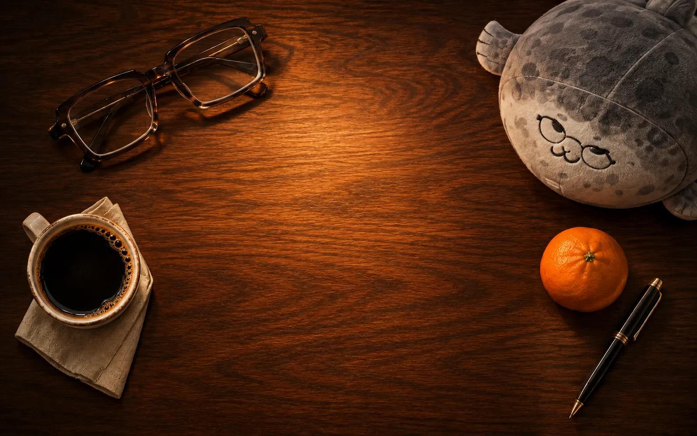

PROJECT 03 / LIVE PREVIEW
03 / 03 / PROJECTS
A PAGE OPENS INTO A WORLD
Paper to hologram
Hover or focus the spread and its interface rises into light.Four translucent UI planes, pointer parallax and an amber scanline.

03 / 03 / PROJECTS
A PAGE OPENS INTO A WORLD
Hover or focus the spread and its interface rises into light.Four translucent UI planes, pointer parallax and an amber scanline.